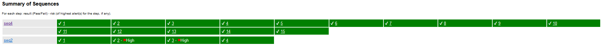

Traditional HTML
Sections
| Section |
ID |
| Alert Count |
alertcount |
| Insights |
insights |
| Instance Count |
instancecount |
| Alert Details |
alertdetails |
| Sequence Details |
sequencedetails |
Screenshot

Sequence Support
If "Sequence Details" are included in the report. Both a summary
section and details section will be included.
